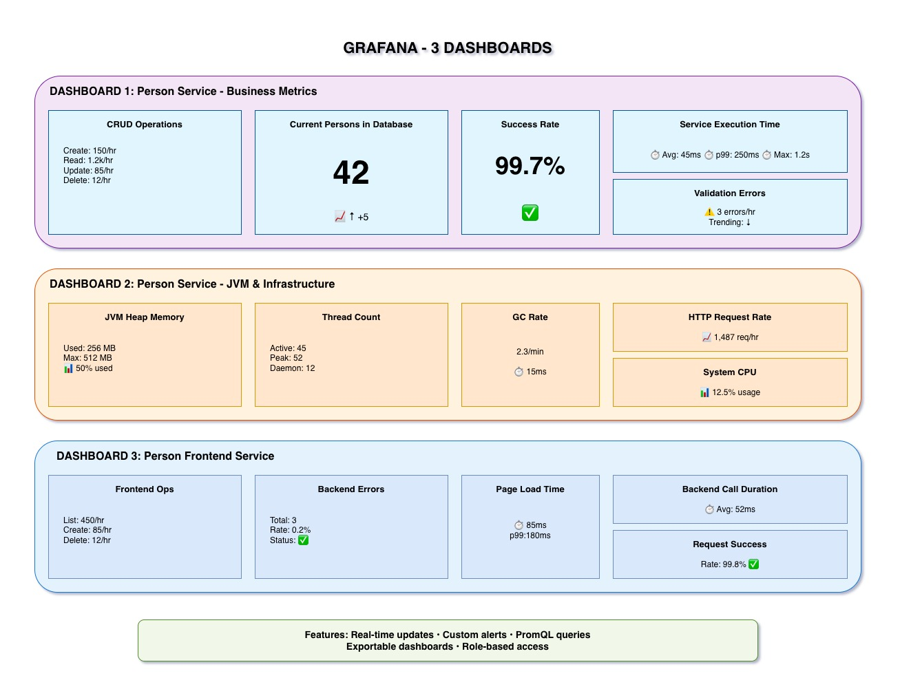

Grafana: Making Metrics Beautiful
Three dashboards with 20+ panels providing complete visibility into your system.

What is Grafana?
Grafana is the leading open-source platform for metrics visualization and monitoring. It transforms raw Prometheus data into beautiful, actionable dashboards.
- Visualization: Graphs, gauges, tables, heatmaps
- Dashboards: Organize panels into logical views
- Alerts: Threshold-based notifications
- Variables: Dynamic queries and filters
- Industry standard for metrics visualization
- Powerful query editor for PromQL
- Real-time updates
- Customizable and shareable
Our Three Dashboards
Focus: Business operations and user behavior
- Total Persons in Database (Gauge): Current count
- CRUD Operations Rate (Graph): Operations per second over time
- Operation Distribution (Pie Chart): Create vs Read vs Update vs Delete
- Validation Error Rate (Graph): Failed operations over time
- Service Execution Time (Graph): Performance by method
- Repository Operations (Counter): Database queries
Use Case: Track business KPIs, identify bottlenecks, monitor user activity
Focus: Technical health and resource usage
- JVM Memory Usage (Graph): Heap vs Non-Heap over time
- Thread Counts (Graph): Active threads, daemon threads
- GC Activity (Graph): Garbage collection frequency and duration
- HTTP Request Metrics (Graph): Total requests, response codes
- System Resources (Gauges): CPU load, file descriptors
- Database Connection Pool (Graph): Active vs idle connections
Use Case: Identify memory leaks, capacity planning, infrastructure monitoring
Focus: Frontend operations and user experience
- Frontend Operations Rate (Graph): User interactions per second
- Backend Communication Errors (Graph): Connection/timeout/server errors
- Page Render Times (Graph): List page vs Form page performance
- Success Rate Gauge: Percentage of successful operations
- Operations Distribution (Bar Chart): List vs View vs Create vs Update vs Delete
- JVM Metrics: Memory, threads (same as backend)
Use Case: Monitor user experience, identify frontend-backend communication issues
20+ Dashboard Panels
Time-series line charts showing trends over time
- CRUD operations rate
- Response times
- Memory usage
- Error rates
Single value indicators for current state
- Total persons in DB
- Success rate percentage
- Current CPU load
- Active connections
Visual distribution representations
- Pie charts (operations)
- Bar charts (distribution)
- Heatmaps (density)
- Tables (detailed data)
Real-Time Monitoring
- Auto-Refresh: Dashboards update every 5 seconds
- Live Data: See metrics as they happen
- Time Range Selector: Last 5 minutes, 1 hour, 24 hours, custom
- Zoom & Pan: Investigate specific time periods
Configurable Alerts
Grafana can send alerts when metrics cross thresholds:
- Example 1: Alert if response time > 500ms for 5 minutes
- Example 2: Alert if error rate > 5% for 1 minute
- Example 3: Alert if memory usage > 90%
- Example 4: Alert if backend errors > 10 per minute
Notification Channels: Email, Slack, PagerDuty, Webhook
Accessing Grafana
- URL: http://localhost:3000
- Username: admin
- Password: admin (change on first login)
- Datasource: Prometheus (pre-configured)
- Dashboards: Pre-loaded in
grafana-config/dashboards/
Key Takeaways
- Grafana turns Prometheus metrics into visual insights
- Three dashboards cover business operations + infrastructure + frontend
- 20+ panels provide comprehensive monitoring across all services
- Real-time updates with configurable refresh intervals
- Threshold-based alerting for proactive monitoring